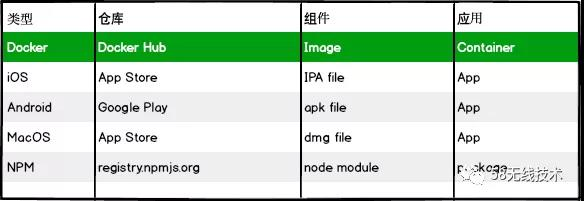

jenkins搭建前端上线系统小试
概述
一次在跟同事讨论中忽然萌生了自己手动搭建一套上线系统的想法，第一次上手，所以选用了业内比较成熟的方案-jenkins。之前只是用过jenkins进行过一些操作，并未自己从0到1完成搭建，本文记录下自己整个过程中的遇到的一些问题与解决方案。
准备知识
linux安装软件的方式（知道的可以直接跳过本节）：
一般有三种方式：Linux系统中安装软件的几种方式
源码包安装：
下载源码 -> 解压 -> 运行configure配置等 -> make 编译 -> make install 安装rpm包安装：
RedHat Package Manager，由红帽公司提出，建议统一的数据库文件，详细记录软件包的安装、卸载等变化信息，能够自动分析软件包依赖关系。用RPM工具可以将二进制程序进行打包，包被称为RPM包。RPM包并不是跨平台的。yum源安装：
Yellow dog Updater, Modified, 是一个在Fedora和RedHat以及CentOS中的Shell前端软件包管理器。基于RPM包管理，能够从指定的服务器自动下载RPM包并且安装，可以自动处理依赖性关系，并且一次安装所有依赖的软件包，无须繁琐地一次次下载、安装
linux启动服务管理两种方式service和systemctl：
service作为启动init进程的主命令存在一些历史缺陷，Systemd就是他的升级版，他为系统的启动和管理提供一套完整的解决方案。Systemd 并不是一个命令，而是一组命令，涉及到系统管理的方方面面：systemctl是 Systemd 的主命令，用于管理系统。
方案一： docker安装
docker作为目前比较火的一个名词，自己一直没机会使用，了解到jenkins可以通过docker来安装，于是，从docker开始，进入了采坑之旅。
centos上安装docker
自己的服务器为阿里云，版本如下（以下所有操作均是基于此台机器）：
uname -a
Linux iZ2zeb34hcp1ui0lowu4atZ 3.10.0-957.5.1.el7.x86_64 #1 SMP Fri Feb 1 14:54:57 UTC 2019 x86_64 x86_64 x86_64 GNU/Linux
docker的安装还是比较简单的，参照阿里云官方文档几分钟搞定：
添加yum源
# yum install epel-release –y // 安装并启用 EPEL 源。
# yum clean all
# yum list
安装并运行Docker
# yum install docker-io –y
# systemctl start docker // 启动docker服务
检查安装结果。
# docker info
关于 docker
“Docker” 的本质其实是解决了应用服务的 “隐私” 问题，实现进程、内存、文件、网络之间相互隔离。也可以简单把 Docker 理解成一种虚拟机，很多应用服务可以像桌面软件那样一键安装，免部署和环境配置。
前端为什么需要使用 Docker？
- 对于 Full Stack 工程师。Docker 可以提供一种简单轻便的服务器编程环境，而且可以随用随删、降低环境配置成本。
- 很多 FE 日常工作中需要跟 Nginx、MongoDB、MySQL 等服务器应用打交道。用 Docker 可以很容易部署一个测试环境，学习和倒腾.
Docker 中的三个概念
Container - 容器
Image - 镜像
Registry - 仓库
可以像下面这张图来类比：

docker 安装jenkins
使用下面的 docker run 命令运行 jenkinsci/blueocean 镜像作为Docker中的一个容器(如果本地没有镜像，这个命令会自动下载):
docker run \
--rm \
-u root \
-p 8080:8080 \
-v jenkins-data:/var/jenkins_home \
-v /var/run/docker.sock:/var/run/docker.sock \
-v "$HOME":/home \
jenkinsci/blueocean
此时就进入jenkins安装流程，具体参照此处jenkins官网安装示例：
启动服务，输入密码继续(安装过程忘记截图了，以下图收集于网络)；
启动后安装推荐插件:
安装插件完成后，进入设置初始账号密码:
设置完毕即可进入jenkins主页：
可能遇到的问题：
1.访问接口出现：Error:403 No valid crumb was included in the request
解决：关闭安全设置里面的-防止款站点请求伪造选项，具体参照此处。
jenkins 配置nodejs
进入插件管理，安装Nodejs Plugin:
进入全局工具配置，配置项目中会用到的nodejs版本，可以配置多个
jenkins + github 配置项目
开始创建项目，选择自由风格：
开始配置项目（以github私有项目为例）
此处我们填写完git地址后需要添加凭证，添加其他个人私有密钥不知道为啥一直在下拉菜单中选不到，添加用户名密码则可以，暂时还不知道啥原因~
触发器中我们选择hook，push之后，自动触发构建
此处在github中也要做对应配置才可出发hook功能：
也可以自定义配置，譬如，push 与 merge时触发，选择Let me select individual events，勾选以下选项：
Deployments
Deployment statuses
Pull requests
Pushes
接下来我们配置拉去完代码后需要执行的脚本，centos上我们选择shell脚本：
至此，一个简单的配置已经完毕，可以进行自动构建测试了！！
doker 模式下遇到的问题
我们随便改一点东西，向master分支push代码，触发构建；构建任务正常触发，但执行到shell脚本时却出现了异常：
[test-project] $ /bin/sh -xe /tmp/jenkins6958996694563138608.sh
+ node -v
/tmp/jenkins6958996694563138608.sh: line 2: node: not found
Build step 'Execute shell' marked build as failure
Finished: FAILURE
通过docker exec -it 4c0fd5e5f2c5 bash 命令进入容器内部bash访问：
cd /var/jenkins_home/tools/jenkins.plugins.nodejs.tools.NodeJSInstallation/nodejs_10.15.3/
nodejs文件夹存在，但执行 bin/node -v 报错，提示 : No such file or directory
解决：终于在stackoverflow 翻到一个大佬的回答，原因如下：
This happens because the image doesn't contain libstdc++.so.6 as needed by nodejs
In other words, node: not found does not mean node is not installed (it is, it is executable and found in the $PATH).
It means one of node dependencies is not found.
我们通过，手动安装：
apk add --no-cache --update nodejs nodejs-npm
拉取的是Node.js Alpine 镜像，这个镜像做个优化，并没有内置npm包（本人验证 10.14.2是没有的）需要手动再安装npm；
再次构建
/var/jenkins_home/tools/jenkins.plugins.nodejs.tools.NodeJSInstallation/nodejs_10.15.3/bin:/usr/local/sbin:/usr/local/bin:/usr/sbin:/usr/bin:/sbin:/bin:/usr/lib/jvm/java-1.8-openjdk/jre/bin:/usr/lib/jvm/java-1.8-openjdk/bin
+ node -v
v10.14.2
+ npm -v
6.4.1
Finished: SUCCESS
执行成功，考虑到调试困难和后续还需要全局安装vue-cli3.0 于是决定放弃docker方式，改用RPM方式再次安装jenkins
RPM方式安装jenkins
因为Jenkins是基于java的,所以需要先安装jdk
安装java环境
sudo yum install java
下载rpm包：
通过RedHat Linux RPM packages for Jenkins网站下载所需的rpm包，我安装的是jenkins-2.195-1.1.noarch.rpm
安装jenkins
sudo rpm -ih jenkins-2.73.2-1.1.noarch.rpm
自动安装完成之后：
/usr/lib/jenkins/jenkins.war WAR包
/etc/sysconfig/jenkins 配置文件
/var/lib/jenkins/ 默认的JENKINS_HOME目录
/var/log/jenkins/jenkins.log Jenkins日志文件
启动jenkins
sudo systemctl start jenkins.service
之后的操作与上一步docker安装方式基本一摸一样，唯一区别的就是器nodejs安装方式
node调用centos全局配置
取消构建环境配置下的：Provide Node & npm bin/ folder to PATH 即可
完善整个构建流程
其实主要就是shell脚本的编写，项目中配置如下(新建了另外一个项目vue-build-project)：
node -v
echo "开始安装依赖..."
npm install
echo "开始打包..."
npm run build
base="/home/upload-upyun"
dest="vue-build-project"
cp -r ./dist ${base}/${dest}
echo "开始上传..."
node ${base}/index.js ${dest}
rm -rf ${base}/${dest}
/home/upload-upyun/index.js 内容如下：
const argPath=(process.argv.splice(2));//通过透传参数获取文件夹目录
const uploadFolder=(argPath[0]?argPath[0]:'').replace(/^--/g,'');
const rootPath=(argPath[1]?argPath[1]:'').replace(/^--/g,''); //静态资源服务器的上传根路径
const fs=require("fs");
const path=require("path");
const upyun = require("upyun/dist/upyun.common");
const localFileArr=[];
function readPathSync (p) {
if(!fs.existsSync(p)) return;
const stat = fs.statSync(p)
if (stat.isDirectory()) {
const ls = fs.readdirSync(p).map(file => path.join(p, file))
for (let i = 0; i < ls.length; i++) {
readPathSync(ls[i])
}
} else {
localFileArr.push(p)
}
}
const ypyConf={
"serviceName" : "xxx",
"operatorName" : "xxx",
"password" :"xxx",
"remotePath" rootPath,
};
// 需要填写本地路径，云存储路径
const remoteRoot = ypyConf.remotePath;
const upService = new upyun.Service(ypyConf.serviceName, ypyConf.operatorName, ypyConf.password);
const upClient = new upyun.Client(upService);
const prefix=(path.join(__dirname))
// 上传参数
// console.log(upClient)
function uploadFile(localFile){
const remoteFile= remoteRoot+(localFile.replace(prefix,'')).split(path.sep).join("/")
upClient.putFile(remoteFile, fs.createReadStream(localFile), {
'Date': new Date(),
'Content-Length': fs.statSync(localFile).size,
}).then(res => {
if (res) {
console.log(remoteFile+":上传成功")
} else {
console.log(remoteFile+":上传失败")
}
}).catch(err => {
console.log("上传出现异常！")
})
}
readPathSync(path.join(__dirname,uploadFolder));
localFileArr.map((item)=>{
uploadFile(item)
})
最终构建效果
16:21:48 [vue-build-project] $ /bin/sh -xe /tmp/jenkins8111626610056806132.sh
16:21:48 + node -v
16:21:48 v10.15.3
16:21:48 + echo 开始安装依赖...
16:21:48 开始安装依赖...
16:21:48 + echo 开始打包...
16:21:48 开始打包...
16:21:48 [vue-build-project] $ /bin/sh -xe /tmp/jenkins6507915611034625552.sh
16:21:48 + cd /var/lib/jenkins/workspace
16:21:48 + cd vue-build-project
16:21:48 + cp -r ./dist /home/upload-upyun/vue-build-project
16:21:48 + echo 开始上传...
16:21:48 开始上传...
16:21:48 + node /home/upload-upyun/index.js vue-build-project
16:21:48 /test/vue-build-project/favicon.ico:上传成功
16:21:48 /test/vue-build-project/index.html:上传成功
16:21:48 /test/vue-build-project/static/js/app.6e3674b9.js:上传成功
16:21:48 /test/vue-build-project/static/css/app.e2713bb0.css:上传成功
16:21:48 /test/vue-build-project/static/img/logo.82b9c7a5.png:上传成功
16:21:48 /test/vue-build-project/static/js/chunk-vendors.a1771d7d.js:上传成功
16:21:48 + rm -rf /home/upload-upyun/vue-build-project
16:21:48 Finished: SUCCESS
遇到的问题
在npm install 这一步出现了一个问题困扰了我两天，执行过程中jenkins进程会忽然挂掉,一直以为是配置的问题，后来忽然意识到可能是被centos给干掉了，查看日志：
grep "Out of memory" /var/log/messages
得到日志如下：
时间节点与我构建时完全相同！！！！，坑啊！！！查阅资料明白是触发了 linux 的 OOM killer 机制：
于是乎重启服务器，只开启Jenkins，重新构建。我的阿里云服务器可怜的1G内存在构建过程中的内存变化如下：
所以，都是贫穷惹的祸~
根据git diff 选择性上传文件
有些情况下，我们只需要上传变动的文件，并不需要上传所有文件，此时shell部分可以这样编写：
diff=`git diff --name-only HEAD~1 HEAD~0`
base="/home/upload-upyun"
dest="static-demo"
rm -rf ${base}/${dest}
# 创建目标文件夹
mkdir -p ${base}/${dest}
# 循环复制变动文件(被删除文件忽略，只做新增与覆盖)
for line in $diff
do
if [ -f $line ];then
cp --parents -afv $line ${base}/${dest}
fi
done
echo "开始上传..."
node ${base}/index.js --${dest}
rm -rf ${base}/${dest}
jenkins的其他安装方式
也可以通过以下方式安装Jenkins，本文不再尝试，效果与rpm方式理论应该等同，具体可参照:
- yum进行安装：jenkins yum 安装
- war包安装：WAR包方式安装Jenkins
Generic Webhook Trigger Plugin
上述的webhook是通过github-plugin 进行触发，但对于其他git托管，如腾讯云，阿里云，码云等其他第三方git服务提供平台，并没有对应的插件，此时，就轮到 Generic Webhook Trigger Plugin 插件登场：
首先，进行安装，过程省略。安装完毕后在项目配置页面可以看到多出一个配置：
我们需要拿到webhook的地址，根据官方文档可以知道，我们需要拿到Jenkins管理员的API token, 进入管理用户页面，选择admin生成一个：
最终得到的webhook地址为：http://xxx:8080/generic-webhook-trigger/invoke?token=11d85c3af55e018axxxxxx, 这里我们以腾讯云为例，配置下webhook:
我们再回到项目配置页面，需要对该插件做一些配置, 默认我们配置好webhook后，所有配置过该webhook的页面，所有项目与分支的任意一个变动都可以触发所有项目的构建，这显然不是我想要的，我们需要做一些区分，参照此文章：
- 区分分支
- 区分项目（不同服务提供商字段会有差异，腾讯云是在repository下）
- 配置token
- 过滤字段匹配项目（此处为每个项目特有配置，区分好项目与分支）
我们手动构建一次可以看到webhook返回结果如下：
{
"ref": "refs/heads/dev",
"before": "6b53d96f0ee3dc5b1b60d389105d330641ac1612",
"after": "9370030232017ff649a070ae6bf1bdd7522a037c",
"created": false,
"deleted": false,
"compare": "\u003ca href\u003d\u0027https://coding.net/u/wangminghuan/p/jenkins-autoupload\u0027 target\u003d\u0027_blank\u0027\u003ejenkins-autoupload\u003c/a\u003e/git/compare/6b53d96f0ee3d...9370030232017",
"commits": [{
"id": "9370030232017ff649a070ae6bf1bdd7522a037c",
"distinct": false,
"message": "fix:添加文件\n",
"timestamp": 1569831379000,
"url": "\u003ca href\u003d\u0027https://coding.net/u/wangminghuan/p/jenkins-autoupload\u0027 target\u003d\u0027_blank\u0027\u003ejenkins-autoupload\u003c/a\u003e/git/commit/9370030232017ff649a070ae6bf1bdd7522a037c",
"author": {
"name": "wangminghuan",
"email": "m.h.wang@foxmail.com",
"username": "wangminghuan"
},
"committer": {
"name": "wangminghuan",
"email": "m.h.wang@foxmail.com",
"username": "wangminghuan"
},
"added": ["dofun.png"],
"removed": [],
"modified": []
}],
"head_commit": {
"id": "9370030232017ff649a070ae6bf1bdd7522a037c",
"distinct": false,
"message": "fix:添加文件\n",
"timestamp": 1569831379000,
"url": "\u003ca href\u003d\u0027https://coding.net/u/wangminghuan/p/jenkins-autoupload\u0027 target\u003d\u0027_blank\u0027\u003ejenkins-autoupload\u003c/a\u003e/git/commit/9370030232017ff649a070ae6bf1bdd7522a037c",
"author": {
"name": "wangminghuan",
"email": "m.h.wang@foxmail.com",
"username": "wangminghuan"
},
"committer": {
"name": "wangminghuan",
"email": "m.h.wang@foxmail.com",
"username": "wangminghuan"
},
"added": ["dofun.png"],
"removed": [],
"modified": []
},
"pusher": {
"name": "王明欢",
"email": "m.h.wang@foxmail.com",
"username": "wangminghuan"
},
"sender": {
"id": 2222972,
"login": "wangminghuan",
"avatar_url": "https://coding-net-production-static-ci.codehub.cn/e4ed6f51-7033-4c66-bb1c-d567795c88a9.jpg?imageMogr2/auto-orient/format/jpeg/cut/!640x640x0x0",
"url": "https://dev.tencent.com/api/user/key/wangminghuan",
"html_url": "https://dev.tencent.com/u/wangminghuan",
"name": "王明欢",
"name_pinyin": "|wmh|wangminghuan"
},
"repository": {
"id": 4733490,
"name": "jenkins-autoupload",
"full_name": "wangminghuan/jenkins-autoupload",
"owner": {
"id": 2222972,
"login": "wangminghuan",
"avatar_url": "https://coding-net-production-static-ci.codehub.cn/e4ed6f51-7033-4c66-bb1c-d567795c88a9.jpg?imageMogr2/auto-orient/format/jpeg/cut/!640x640x0x0",
"url": "https://dev.tencent.com/api/user/key/wangminghuan",
"html_url": "https://dev.tencent.com/u/wangminghuan",
"name": "王明欢",
"name_pinyin": "|wmh|wangminghuan"
},
"private": true,
"html_url": "\u003ca href\u003d\u0027https://dev.tencent.com/u/wangminghuan/p/jenkins-autoupload\u0027 target\u003d\u0027_blank\u0027\u003ejenkins-autoupload\u003c/a\u003e",
"description": "测试jenkins自动化部署上传",
"fork": false,
"url": "https://dev.tencent.com/api/user/wangminghuan/project/jenkins-autoupload",
"created_at": 1568866930000,
"updated_at": 1568866930000,
"clone_url": "https://git.dev.tencent.com/wangminghuan/jenkins-autoupload.git",
"ssh_url": "git@git.dev.tencent.com:wangminghuan/jenkins-autoupload.git",
"default_branch": "master"
}
}
至此，配置基本完毕。
权限部分配置
通过插件 Role-based Authorization Strategy 配置完成，安装完插件，重启Jenkins，会发现配置页面多一个选项：
首先需要在全局安全配置页面将授权策略改为：Role-Based Strategy
进入 Manage Role 选项，配置用户角色与所在组角色权限
进入 Assign Roles 选项，为用户分配角色（首先需要在用户管理板块创建用户）
具体可参考jenkins配置用户角色权限，根据不同权限显示视图、Job
总结
docker安装方式比较傻瓜，而且整个插件安装的过程都比较快，但是因为docker就像一个封闭的黑盒，很多东西与系统是隔离开的（废话，设计初衷就是这样），导致我这个菜鸟遇到问题想不到好的解决方案。嗯，还是RPM用起来更顺手一些，遇到问题基本还能应对。最后，不差钱的，请上大内存服务器~
可能用到的linux命令
# 启动docker
systemctl start docker
# 停止docker
systemctl stop docker
# 列出docker内正在运行的容器
docker ps
# 列出docker内的容器
docker ps -a
# 启动docker内容器
docker start <id>
docker restart <id>
docker stop <id>
# 进入docker容器内部执行命令
docker exec -it <id> bash
# 查看jenkins启动状态
systemctl status jenkins.service
# 查看jenkins日志
sudo tail -f /var/log/jenkins/jenkins.log 查看日志
补充：增加swap分区解决阿里云内存不足
发现可以扩展Swap分区，即交换区，系统在物理内存（这里应该是运行内存）不够时，与Swap进行交换，来解决内存不足的问题。设置步奏如下：
首先创建用于交换分区的文件，并设置交换分区文件
dd if=/dev/zero of=/var/swap bs=1024 count=4096000创建 swap 文件
mkswap /var/swap加载这个文件
swapon /var/swap执行以上命令可能会出现：“不安全的权限 0644，建议使用 0600”提示，其实已经激活了，可以忽略，修改权限：
chmod -R 0600 /var/swap设置系统启动时自动挂载分区
echo "/var/swap swap swap defaults 0 0" >> /etc/fstab确定系统对SWAP分区的使用原则，当swappiness内容的值为0时，表示最大限度地使用物理内存，物理内存使用完毕后，才会使用SWAP分区。当swappiness内容的值为100时，表示积极地使用SWAP分区，并且把内存中的数据及时地置换到SWAP分区。liunx默认为60，此处我们设置为默认大小60
echo 60 > /proc/sys/vm/swappiness
再次运用构建命令，查看内存变化，会发现swap区已经得到了利用：